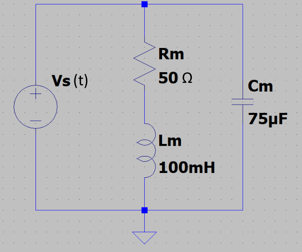

Effekten pulserer 100 gange i sekundet. Middelværdien er det, elmåleren tæller.
(a) FORKLAR · 2 SLIDES
Øjebliks-effekt og middeleffekt . Hvorfor faseforskydningen koster, og hvad effektfaktoren er.
(b) BEREGN · 2 SLIDES
Forenklet AC-maskine ( med parallelt), , 50 Hz. Find , og PF, og plot.
Opgavens kredsløb

→ / mellemrum: næste · ←: forrige · F: fuld skærm
SPM. 6 (a) · 1/2
Effekten pulsererp = v · i i hvert øjeblik
To effekter
Øjebliks-effekt. Svinger med dobbelt frekvens (100 Hz). Cyklistens kraft på pedalen svinger, mens farten er jævn.
Middeleffekt [W]. Det, der faktisk bliver til varme og arbejde, og det, du betaler for.
Faseforskydning mellem v og i: .
PFEffektfaktor . 1 = ren modstand, og 0 = ren spole eller kondensator.
Prøv selv: skub strømmen i tid
Faseforskydning θ
SIGp(t) svinger med dobbelt frekvens. Middelværdien Pav er ½·Vm·Im·cos θ. Når strømmen skubbes i tid, kommer negative stykker, og middelværdien falder.
SPM. 6 (a) · 2/2
Energi, der lånes og gives tilbagederfor PF
1
Gang v og i sammen (produkt af to cos)
2
Konstant del = middeleffekten. Svingende del har middelværdien 0.
3
Negativ p: spolen eller kondensatoren afleverer sin gemte energi tilbage til nettet.
4
Lav PF koster: samme nyttige effekt kræver større strøm. Ledninger og transformere skal være større, så elselskabet straffer lav PF.
Hvem bruger, og hvem låner?
ENERGI UD PR. PERIODE
TILBAGE TIL NETTET
PF = cos θ
SIGEn ren spole eller kondensator låner energien og giver den tilbage: Pav = 0. PF fortæller, hvor stor en del af strømmen der laver nyttigt arbejde.